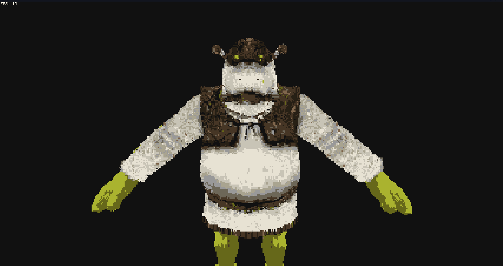

warning
C3D is HIGHLY experimental and is in early stages of development, only use if you know what you are doing.
C3D is an advanced 3D Renderer for ComputerCraft. It provides the ability to load .obj files and apply textures.
How to download: wget run https://github.com/9551-Dev/C3D/raw/master/installer.lua
actual usage:
-
after you run the installer a new folder called libC3D and a c3d.lua file will be created. libC3D is a folder containing essential core files and the actual libraries code while c3d.lua is sort of a "client" to run your programs using C3D.
-
to run a program type
c3d <foldername>this folder must contain a main.lua file with your code and other stuff -
to have a program run C3D without having it be in a folder you can require c3d.lua and run the
runfunction
local C3D = require("c3d") C3D.run(function() -- awesome code end)
Examples will be found in the examples directory, currently still working on them.

Modules
| c3d.camera | The camera module is used for working around with camera objects and the scenes camera |
|---|---|
| c3d.event | The event module is mainly used internally for sharing data across the engine. |
| c3d.geometry | The geometry module is used for getting default basic shapes. |
| c3d.graphics | The graphics module is used for image and rendering settings related things, such as texture loading and starting frame ... |
| c3d.keyboard | The keyboard module is used for checking for inputs and interactions from the user |
| c3d.mouse | the mouse module is used for getting inputs from the mouse. |
| c3d.perspective | the perspective module is used for manipulating the cameras perspective in the scene |
| c3d.pipe | the pipe module is used to modify and manipulate the rendering pipeline by adding or changing functions inside of it |
| c3d.scene | the scene module is used for changing things in the 3D scene and adding new geometries |
| c3d.shader | the shader module provides a bunch of tools for creating your own custom shaders and also the default shaders so they ca... |
| c3d.sys | few C3D system related functions |
| c3d.thread | the thread module is used for multitasking and sharing data across "channels" IMPORTANT: you can use the threaderror cal... |
| c3d.timer | a bunch of FPS and time related things |
Callbacks
| c3d.errorhandler | A callback function which gets ran when your program causes an exception. |
|---|---|
| c3d.load | A function that gets ran the moment the main loop of the 3D engine starts you can use it to load assets/models/generate ... |
| c3d.postrender | This callback function can be used to draw some overlay on top of the rendered screen. |
| c3d.quit | Used for detecting when the user tries to quit the application by terminating it using the Ctrl+T shortcut. |
| c3d.render | This function gets called right before the 3D scene is rendered. |
| c3d.run | The default main loop that the library uses for frame updates. |
| c3d.threaderror | This callback is called when a thread object from the thread module thread object has an exception happen. |
| c3d.update | This callback should be used for updating the sceene and states of it. |
Event-Callbacks
| c3d.keypressed | A callback function which gets called when you press key on the keyboard or when you have the key held down this gets tr... |
|---|---|
| c3d.keyreleased | Happens when a keyboard key has been released. |
| c3d.mousemoved | This callback is a bit more complicated. |
| c3d.mousepressed | A callback function which gets ran when any mouse button is pressed you can also easily use it to handle things like dou... |
| c3d.mousereleased | A callback function triggered when the user releases a pressed mouse button i terms of arguments and how it works it is ... |
| c3d.textinput | A really simple callback function for when characters are pressed. |
| c3d.wheelmoved | A callback function which gets ran when you scroll the mouse wheel. |
Object
| camera_object | the methods for the camera object |
|---|---|
| generic_shape | definition of a 3D geometry along with some methods |
| imported_model | the object you get when you import a model from a model file. |
| palette | the palette object is used by the image library to apply quantized palettes using tail calls. |
| scene_object | The scene object is used to interact with the 3D models in the scene. |
| texture | a loaded texture object. |
Examples
| example.shader | shaders can be quite tricky but are very powerful once you learn to use them. |
|---|---|
| example.texturing | here i will show how to put the CC:T logo (https://tweaked.cc/pack.png) on a spinning cube |
| example.thread | the thread library is meant to be used for multitasking and sending data across your program using channels. |
Misc
| geometry_flags | there are several flags you can asign to your geometry, here is a list of them |
|---|---|
| geometry_table_format | the geometry table format contains of 3 main values. |
| texture_load_settings | The settings used when loading images using the graphics module |